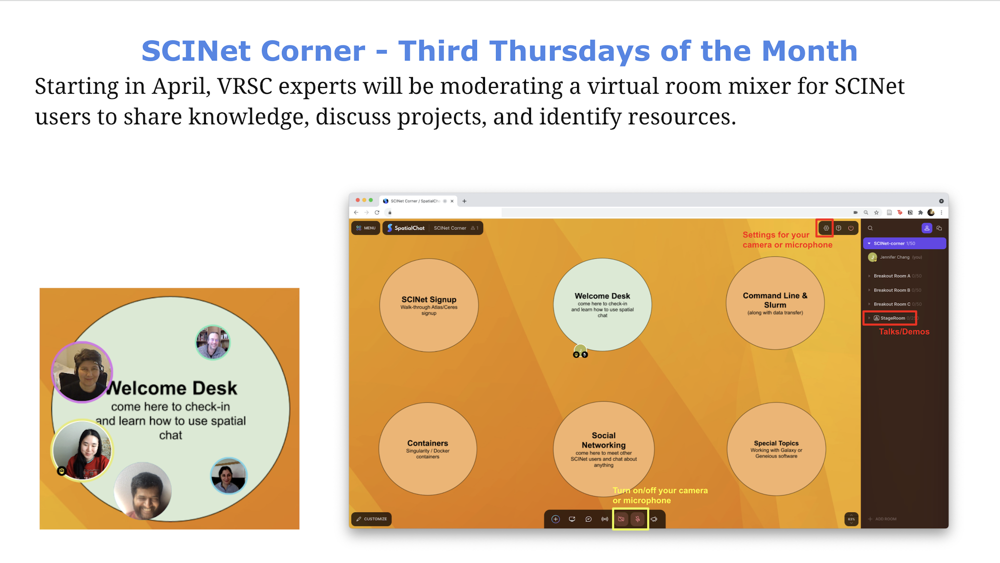
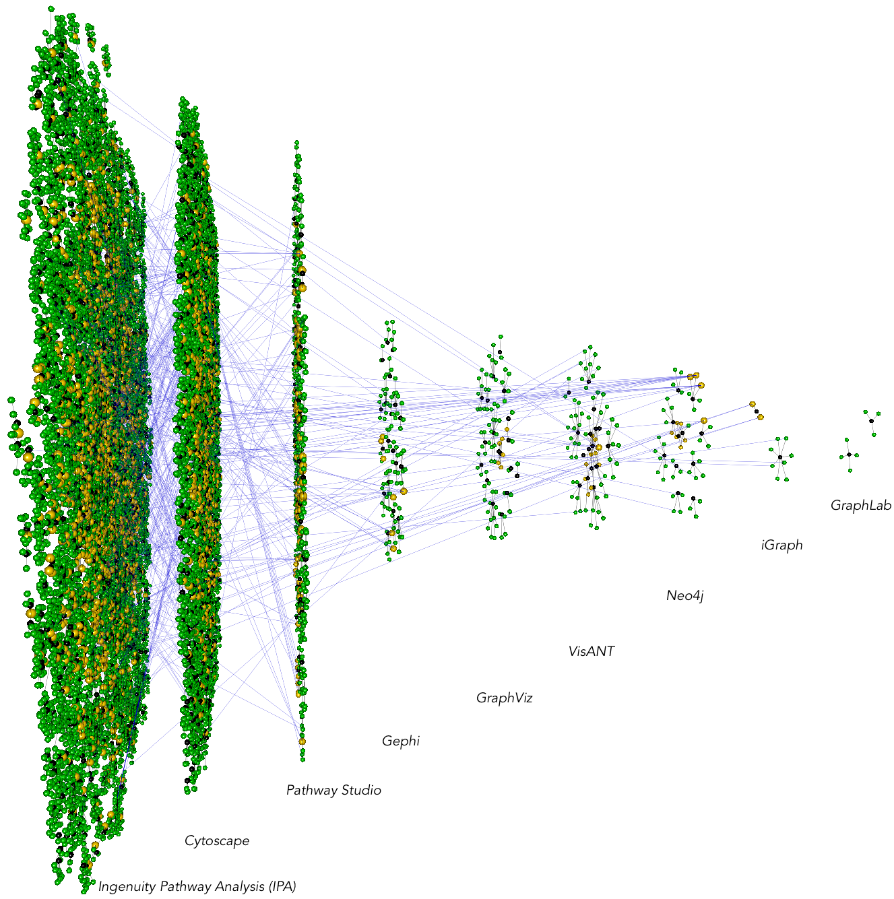

Projects
April 2021 - November 2021 SCINet Corner
Based on feedback across the USDA, designed and developed the monthly virtual meetings for researchers to get started using SCINet Resources. Spatial Chat allowed accomodations of large groups from all regions of the USA to interact and share best practices. Short demos or talks would kick off each meeting and included topics such as containers, galaxy, using the long term storage, jupyterhub, and some slurm best practices.

2020-present Bioinformatics Workbook: tutorial contributions.
GitHub Repo: ISUgenomics/bioinformatics-workbook Website: https://bioinformaticsworkbook.org
The Bioinformatics Workbook is maintained by the Genome Informatics Facility at Iowa State University. Through collaboration, contributed the following tutorials:
- Setting up an R and RStudio environment
- WGCNA: weighted gene correlation network analysis
- Image Processing Fundamentals
- Introduction to binder
- FastTree phylogenetics
2020-present HuffordLab/Maize_WGS_Build: GATK pipeline wrapped in Nextflow
GitHub Repo: HuffordLab/Maize_WGS_Build
Whole genome sequences (WGS) of various lines of Maize are becoming more and more available. In order to make this information available on the MaizeGDB website, a reproducible, scaleable method to call variants against a reference was needed. In 2020, via a collaboration, the GATK (Genome Analysis Tool Kit) pipeline was wrapped in Nextflow (groovy-based workflow language). The resulting pipeline is avaiable at the following github repo: HuffordLab/Maize_WGS_Build. A fork of the repo is also available at: isugifNF/GATK.
2017-2020 OctoFLU: a pipeline for classifying swine Influenza into the USA clades
GitHub Repo: flu-crew/octoFLU
Influenza A Viruses are made up of 8 genomic segments (HA, NA, PB2, PB1, PA, NP, M, NS) and classifying them into their respective clades can be a tedius process, especially as clade names tend to change over time. octoFLU provides a one-stop-shop to classify the 8 (octo) swine influenza genomic segments into currently accepted U.S. swine influenza clades. The pipeline is mainly available as a commandline tool and can be run natively or in a Docker/Singularity image. A GUI version of the tool is in development and available at the github repo: j23414/octoFLU although it will probably be replaced with a version on flu-crew.
2016-2017 Cavatica: a pipeline for literature mining PubMed and PubMed Central
GitHub Repo: incertae-sedis/cavatica
Cavatica is a set of scripts for pulling PubMed and PubMed Central articles to compare adoption of methods/tools in a research community. The below example is comparing the publications using different network analysis software (IPA, Cytoscape, etc). Green nodes represent authors while black nodes represent papers. The horizontal blue lines, going across network tools, indicate individuals who have published a paper in one software, switching to a different software. Cavatica has several submodule scripts for analyzing these software/method adoption trends.

2014-2017 Mango: an environment for combining heterogeneous networks
Mango Graph Studio development was motivated by the need for fast heterogeneous graph integration and analysis. The software has since been licensed to Complex Computation, LLC. I conceived and wrote the first line of Mango code in January 2014 while working toward a Ph.D. in Bioinformatics at Iowa State University.
Mango was accepted as a Computer Demo at the 2016 Plant and Animal Genome (PAG) meeting.
2012-2014 Lucy2 v2.20: DNA cleaning and trimming
Lucy2 is the GUI version of the Lucy command line program. To learn C++ and wxWidgets, I worked on the GUI update while part of Dr Hui-Hsien Chou's lab at Iowa State University in 2012.
- Download Lucy2
- Updated the GUI using wxWidgets. Updates included allowing multiple sequence files to be analyzed concurrently, new nucleotide color scheme, new FASTQ reader, and creating a settings dialog box validator.
2011 Visualizing Exon Junction Reads in R
During my rotation in Dr. Di Cook's lab at Iowa State University in 2011, I had just started learning R and github and was documenting this mini-project in a blog.
© Jennifer Chang 2020 · Last Update: 2020-10-15